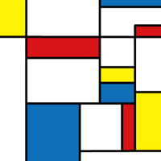
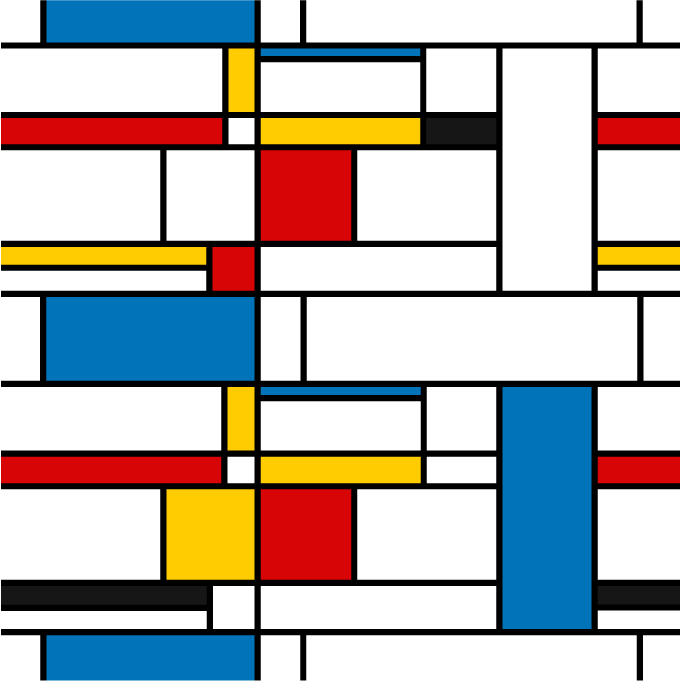
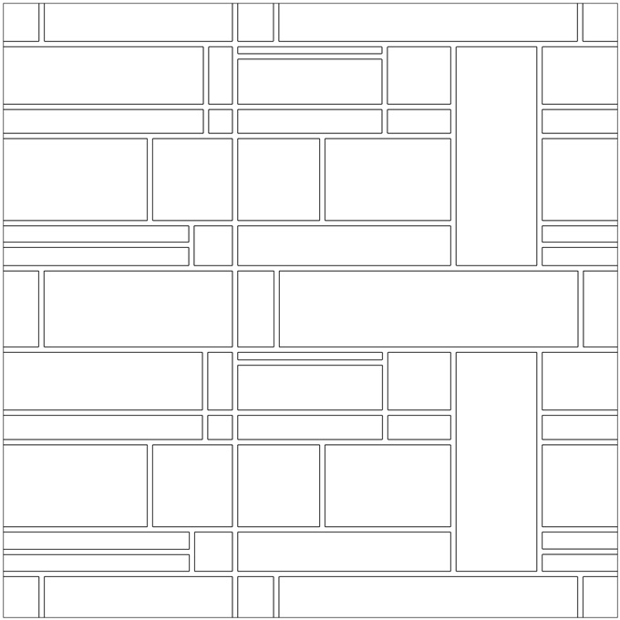

学習ポータル
🔍
🏠 ホーム
›
Photoshop / Illustrator 実践演習
›
モンドリアン柄
モンドリアン柄
柄
Illustrator
2024/01/02
モンドリアン
柄
モンドリアン
柄とは、抽象画で有名なオランダの画家ピート・
モンドリアン
（Piet Mondrian、1872 - 1944）による
幾何学
的な柄

ja.wikipedia.org
長方形と直線を使った表現
直線で黒い線を描く
線幅を調整し、「オブジェクト」メニュー →
「パス」
→「パスのアウトライン」
アウトラインをしたパスを、「
パスファインダー
」→「合体」で一つのオブジェクトにする
背景の白い正方形と一緒に選択して、「
パスファインダー
」→「分割」をする
「ダイレクト選択ツール」で、はみ出ている余分な部分を削除する
「スポイトツール」で、「Alt + クリック」で選択した色を流し込む（面を選択する必要はありません。）


← 前の記事
長方形で形を作る
次の記事 →
ファシズムの教室